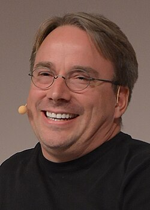
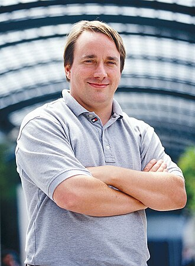

Linus Torvalds
Linus Benedict Torvalds (Helsinki, Finlandia, 28 de diciembre de 1969) es un ingeniero de software finlandés, conocido por iniciar y mantener el desarrollo del kernel (en español, núcleo) Linux, basándose en el sistema operativo libre Minix creado por Andrew S. Tanenbaum y en algunas herramientas, varias utilidades y los compiladores desarrollados por el proyecto GNU. Actualmente es responsable de la coordinación del proyecto. También ha desarrollado el software de control de versiones Git.

Historia
Linus nació en Helsinki, Finlandia, el 28 de diciembre de 1969. Sus padres son Anna y Nils Torvalds, ambos periodistas. Es nieto del estadístico Leo Törnqvist y del poeta Ole Torvalds, y bisnieto del periodista y soldado Toivo Karanko. Torvalds pertenece a la comunidad sueco-parlante de Finlandia. Sus padres tomaron su nombre de Linus Pauling (estadounidense, Premio Nobel de Química 1954). Comenzó sus andanzas informáticas a los 11 años cuando su abuelo Leo Törnqvist, un matemático y estadístico de la Universidad de Helsinki, compró uno de los primeros microordenadores Commodore VIC-20 en 1980 y le pidió ayuda para usarlo; de esta manera su primera línea de código fue hecha en lenguaje BASIC.
A finales de los años 1980 tomó contacto con los ordenadores IBM, PC y en 1991 adquirió un ordenador con procesador modelo 80386 de Intel. En 1988 fue admitido en la Universidad de Helsinki, donde estudió ciencias de la computación. Ese mismo año el profesor Andrew S. Tanenbaum sacó a la luz el S.O. Minix con propósitos didácticos. Su carrera académica se interrumpió después de su primer año de estudios cuando se unió a la Brigada Nyland de la Armada finlandesa en el verano de 1989, seleccionando el programa de entrenamiento de oficiales de 11 meses para cumplir con el servicio militar obligatorio de Finlandia. Obtuvo el grado de segundo teniente, con el papel de observador de artillería. En 1990 empezó a aprender el lenguaje de programación C en su universidad.
A la edad de 21 años, con un año de experiencia programando (en C), ya conocía lo suficiente del sistema operativo Minix como para tomar prestadas algunas ideas y empezar un proyecto personal. Basándose en Design of the Unix Operating System, publicado por Maurice J. Bach en 1986, creó una implementación que ejecuta cualquier tipo de programa, pero sobre una arquitectura de ordenadores compatibles, IBM/PC.
Este proyecto personal desembocó el 5 de octubre de 1991 con el anuncio de la primera versión de Linux capaz de ejecutar BASH (Bourne Again Shell) y el compilador conocido como GCC (GNU Compiler Collection).
En enero de 1992 se adoptó la Licencia Pública General (GPL) para Linux. Esta añade libertades de uso a Linux totalmente opuestas a las del software propietario, permitiendo su modificación, redistribución, copia y uso ilimitado. Este modelo de licencia facilita lo que es conocido como el modelo de desarrollo de bazar, que ha dado estabilidad y funcionalidad sin precedentes a este sistema operativo.
En 1997 recibió los premios 1997 Nokia Foundation Award de Nokia y Lifetime Achievement Award at Uniforum Pictures. Ese mismo año finalizó los estudios superiores (1988-1997) tras un decenio como estudiante e investigador en la Universidad de Helsinki, coordinando el desarrollo del núcleo del sistema operativo desde 1992.
Trabajó en Transmeta desde febrero de 1997 hasta junio de 2003. Actualmente trabaja para el Open Source Development Labs en Beaverton, Oregón. Sólo el 2 % del código del Linux actual está escrito por él, pero, además de su paternidad, en su persona sigue descansando la dirección de la gestión núcleo del sistema operativo.
En 2005 creó Git, un software de control de versiones, pensando en la eficiencia y la confiabilidad del mantenimiento de versiones de aplicaciones cuando estas tienen un gran número de archivos de código fuente.
Creación de Linux
En Finlandia, Linus Torvalds, por entonces estudiante de Ciencias de la Computación de la Universidad de Helsinki, decidió realizar la entonces cuantiosa inversión de 3500 dólares estadounidenses para adquirir un nuevo ordenador con el microprocesador Intel 80386, el cual funcionaba a 33 MHz y tenía 4 MB de memoria RAM. El pago lo realizaría a plazos, pues no disponía de tal cantidad de dinero en efectivo.
Normalmente, este ordenador lo usaba para tener acceso por línea telefónica a la red informática de su Universidad, pero debido a que no le gustaba el sistema operativo con el cual trabajaba, denominado Minix, decidió crear uno él mismo. Inicialmente, escribió un programa con lenguaje de bajo nivel prescindiendo de Minix. En los primeros intentos, consiguió arrancar el ordenador y ejecutar dos procesos que mostraban la cadena de caracteres “AAAAABBBBB”. Uno lo utilizaría para leer desde el módem y escribir en la pantalla, mientras que el otro escribiría al módem y leería desde el teclado. Inicialmente, el programa arrancaba desde un disquete.
La siguiente necesidad que tuvo fue la de poder descargar y subir archivos de su universidad, pero para implementar esta funcionalidad en el software emulador era necesario crear un controlador de disco. Así que después de un trabajo continuo y duro, creó un controlador compatible con el sistema de archivos de Minix. En ese momento, se percató de que estaba creando algo más que un simple emulador de terminal, así que, emprendió la tarea de crear un sistema operativo partiendo de cero. Sin embargo, ante la opción de quedarse con el núcleo inacabado, decidió compartirlo. "Mis razones para lanzar Linux fueron bastante egoístas", declaró, "no quería el dolor de cabeza de tratar de lidiar con partes del sistema operativo que veía como una mierda. Quería ayuda".
De forma privada, Linus nombraba Linux a su nuevo sistema, pero cuando decidió hacer una presentación pública pensó que era demasiado egocéntrico llamarlo así y propuso llamarlo Freax (una combinación de free ("gratis") y la letra X para indicar que es un sistema similar a Unix). Sin embargo, su amigo Ari Lemmke, quien administraba el servidor FTP donde el kernel se alojó por primera vez para su descarga, lo renombró, sin consultar a Linus, porque consideraba que Freax no era un buen nombre.
Después de anunciar el 25 de agosto de 1991 su intención de seguir desarrollando su sistema para construir un reemplazo de Minix, el 17 de septiembre sube al servidor de FTP proporcionado por su universidad la versión 0.01 de Linux con 10 000 líneas de código. A partir de ese momento Linux empezó a evolucionar rápidamente.
Autoría y Marca Registrada
A medida que la popularidad de Linux se extendía, Microsoft lo calificó como un cáncer describiendo al software de código abierto como una afrenta al capitalismo. Linus fue presentado como un activista socialista de software finlandés que amenazaba a la industria del software. Sin embargo, Linus declaró que encontraba a la "gente que piensa que el código abierto es anticapitalismo algo ingenuas y un poco estúpidas". En una entrevista, Linus declaró que "no creo que las economías planificadas a cinco años funcionen, y tampoco creo que funcione cuando se diseña software. El desarrollo de Linux siempre ha sido una especie de mercado abierto, donde la dirección del desarrollo se establece según la demanda de los clientes, junto con, obviamente, mucho de lo que simplemente llamo buen gusto: evitar cosas que obviamente serán problemáticas a largo plazo". Aunque Linus cree que "el código abierto es la única forma correcta de hacer software", también ha dicho que usa "la mejor herramienta para el trabajo", incluso si eso incluye software propietario.
A partir de 2006, se estima que aproximadamente el dos por ciento del núcleo Linux fue escrito por el propio Linus. Debido a que miles de personas han contribuido al núcleo Linux, este porcentaje es una de las mayores contribuciones al mismo. Sin embargo, declaró en 2012 que su propia contribución personal ahora es principalmente un código de fusión escrito por otros, con poca programación. Linus conserva la máxima autoridad para decidir qué nuevo código se incorpora al núcleo estándar de Linux.
Posee la marca registrada "Linux" y supervisa el uso de la marca a través de la organización sin ánimo de lucro Linux International.

Vida Privada y Controversias
Linus Torvalds está casado con Tove Torvalds (karateka finlandesa). Se conocieron en 1993. Años después se casaron y tuvieron tres hijas, dos de las cuales nacieron en los Estados Unidos.
Linus Torvalds se define a sí mismo como ateo, a lo cual añade que en Estados Unidos, a diferencia con Europa donde la religión es una cuestión personal, esta se encuentra muy politizada. Cuando se le pregunta a Torvalds sobre su opinión respecto a la separación entre estado y religión, este contesta: "Es un poco irónico, que en muchos países Europeos, haya una estrecha vinculación entre el estado y la religión".
En 2010, Torvalds se convirtió en ciudadano estadounidense y fue registrado para poder votar en Estados Unidos. No está afiliado a ningún partido, afirmando "Tengo demasiado orgullo personal como para querer estar asociado con alguno de ellos, francamente."
Linus ha desarrollado desde el año 2000 bastante interés por el buceo, lo que le ha llevado a conseguir numerosas certificaciones. También es el motivo de que posteriormente desarrollara el proyecto Subsurface.
Linus se ha ganado la reputación de persona con la que nadie quiere trabajar. En una conferencia en la Universidad Aalto declaró que Nvidia era “la peor empresa con la que habían tratado” y “foco de continuos problemas para Linux” mostrándoles luego el dedo medio. Linus también criticó a Richard Stallman por tener un pensamiento de "blanco o negro". Sin embargo, a pesar de que Linus declaró que "no [era] una buena persona y no me importa" y abogar por la intimidación personal y la violencia, a través de un comunicado anunció que se tomaría un descanso de sus actividades para aprender a controlar sus emociones.
Logros
- En 1996, un asteroide recibió el nombre de (9793) Torvalds en su honor.
- En 1998 recibió el premio Pioneer Award de la EFF.
- En 1999 recibió el título de doctor honorífico en la Universidad de Estocolmo.
- En 2000 recibió el título de doctor honorífico en la Universidad de Helsinki.
- En la votación «Persona del Siglo» de la revista Time, Linus Torvalds obtuvo la posición número 17.
- En 2001, compartió el premio Takeda Award para las artes sociales y económicas junto a Richard Stallman y Ken Sakamura.
- La película del 2001, Swordfish, contiene un personaje finlandés (el hacker número uno del mundo) llamado Axl Torvalds.
- En 2004, fue nombrado una de las personas más influyentes del mundo en el artículo de la revista Time.
- En el verano de 2004, obtuvo el puesto número 16 en Suuret Suomalaiset.
- En 2005, fue nombrado uno de "los mejores administradores empresariales" en una encuesta de la revista BusinessWeek.
- En agosto de 2005, Linus Torvalds recibió el premio Vollum Award del Reed College.
- En 2006, la revista Business 2.0 lo nombró como «una de las diez personas que no tienen importancia» debido a que el crecimiento e importancia de Linux habían eclipsado el impacto individual de Linus.
- En 2006, la revista Time lo nombra como uno de los héroes revolucionarios de los últimos 60 años.
- En 2008, fue incluido como miembro en el Museo de Historia de la Computación en Mountain View, California, "por la creación del kernel de Linux y la gestión del desarrollo de código abierto del sistema operativo Linux ampliamente utilizado".
- En 2010 recibió el Premio C&C de la Corporación NEC por "contribuciones al avance de la industria de la tecnología de la información, la educación, la investigación y la mejora de nuestras vidas".
- En 2012, la Academia de Tecnología de Finlandia le otorga el premio 2012 Millennium Technology Prize (que comparte con el Dr Yamanaka) "en reconocimiento a su creación de un nuevo sistema operativo de código abierto para ordenadores que llevan como núcleo Linux".
- En 2012, en la conferencia de Internet Society Global INET en Ginebra, Suiza, Torvalds ingresa al Salón de la Fama de Internet, uno de los diez en la categoría Innovadores.
- En 2014, el Institute of Electrical and Electronics Engineers le otorga el IEEE Computer Society's Computer Pioneer Award.
- En 2018, el Institute of Electrical and Electronics Engineers le otorga el IEEE Masaru Ibuka Consumer Electronics Award.